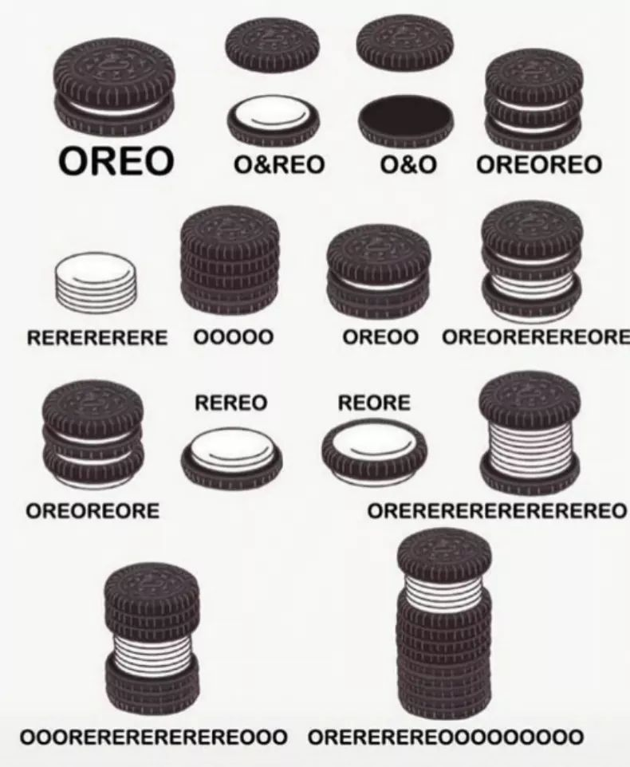

 --- ### "Black Hole" is a really neat compound  [Link to the EHT Team](https://eventhorizontelescope.org/) - [Great video explanation](https://www.youtube.com/watch?v=zUyH3XhpLTo) --- ### Amber's Office Hours Office: AP&M 3351E Office Hours: Tuesdays, 11am-12pm - **All office hours are on the syllabus!** --- # Morphological Analysis ### Dr. Will Styler - LIGN 120 --- ### Today's Plan - What is a morphological analysis? - How does one conduct an analysis of data? - What deadly assumptions can lead me astray? - A fun example! - What does a *good* morphological analysis look like? --- # What is Morphological Analysis --- ### Three Elements of Morphological Analysis in general - **Description:** What's going on in the data? - How is this language accomplishing this linguistic task? - What is the relationship between form and meaning here? - **Prediction:** Does the analysis you've posited accurately predict new data? - Can it generate new grammatical forms? Does it generate *only* grammatical forms? - This is a formalist, *generative* approach - **Explanation:** Is your analysis explicable or explanatory in terms of how morphological systems usually are? - Is there any element of nature which can explain the data patterning in this way? - This is a *functionalist* approach - *Don't worry about the last two for LIGN 120 assignments!* --- ### What does a morphology problem look like? - Most problems involve answering a question like 'How is ____ *coded* or *marked* in this language?' - "What is the process by which speakers mark something as ____?" - Sometimes, this is stated explicitly, but not always --- ### You'll be handed a set of morphologically complex words - Along with their 'glosses' - Maximally transparent English translations --- ### Your analysis must be able to describe the data - You must be able to describe the patterns in the data - You must be able to account for *all of the forms* - Be able to identify the morphemes and what they mean - Be able to describe how they're joined together - Be able to describe which allomorphs show up when - You must explain how your analysis is correct - Part of the task is *teaching* your colleagues how the system works - **Explanation is an important part of your analysis** --- ### **Explanation is an important part of your analysis** - You will not get full credit for turning in a bare list of morphemes, glosses, and rules -  --- ### ... so, how do we actually DO the analysis? --- # Doing Morphological Analysis --- ### Five Steps to Morphological Analysis - 1) Carefully examine the data and determine the question - 2) Group Data by shared elements of meaning - 3) Within those groups, look for recurring patterns of form - 4) Build hypotheses about some groups, then use them to make guesses about other groups - 5) Try to break your analysis with other forms from the dataset --- (If you find another way you'd like, that's great too! This is to get you started.) --- ### Southern Barasano (Colombia) <center> <table> <tr> <th>kahea</th> <th>'eye'</th> <th>kahe</th> <th>'eyes'</th> </tr> <tr> <td>bitia</td> <td>'bead'</td> <td>biti</td> <td>'beads'</td> </tr> <tr> <td>kĩa</td> <td>'cassava tuber'</td> <td>kĩ</td> <td>'cassava tubers'</td> </tr> </table> </center> --- ### 1) Carefully examine the data and determine the question - "Hmm, this is contrasting singular and plural forms. *This must be about marking number!* <center> <table> <tr> <th>kahea</th> <th>'eye'</th> <th>kahe</th> <th>'eyes'</th> </tr> <tr> <td>bitia</td> <td>'bead'</td> <td>biti</td> <td>'beads'</td> </tr> <tr> <td>kĩa</td> <td>'cassava tuber'</td> <td>kĩ</td> <td>'cassava tubers'</td> </tr> </table> </center> --- ### 2) Group Data by shared elements of meaning - "Well, let's put the singular forms in one column..." <center> <table> <tr> <th>kahea</th> <th>'eye'</th> <th>kahe</th> <th>'eyes'</th> </tr> <tr> <td>bitia</td> <td>'bead'</td> <td>biti</td> <td>'beads'</td> </tr> <tr> <td>kĩa</td> <td>'cassava tuber'</td> <td>kĩ</td> <td>'cassava tubers'</td> </tr> </table> </center> --- ### 3) Within those groups, look for recurring patterns of form - <center> <table> <tr> <th>kahea</th> <th>'eye'</th> <th>kahe</th> <th>'eyes'</th> </tr> <tr> <td>bitia</td> <td>'bead'</td> <td>biti</td> <td>'beads'</td> </tr> <tr> <td>kĩa</td> <td>'cassava tuber'</td> <td>kĩ</td> <td>'cassava tubers'</td> </tr> </table> </center> --- ### 3) Within those groups, look for recurring patterns of form - "Weird, it looks like every singular form ends with /a/" <center> <table> <tr> <th>kahe<clr>a</clr></th> <th>'eye'</th> <th>kahe</th> <th>'eyes'</th> </tr> <tr> <td>biti<clr>a</clr></td> <td>'bead'</td> <td>biti</td> <td>'beads'</td> </tr> <tr> <td>kĩ<clr>a</clr></td> <td>'cassava tuber'</td> <td>kĩ</td> <td>'cassava tubers'</td> </tr> </table> </center> --- ### 4) Build hypotheses about some groups, then use them to make guesses about other groups - "It sure seems like -a" is marking the singular forms. So, the plural forms shouldn't end with /a/." <center> <table> <tr> <th>kahe<clr>a</clr></th> <th>'eye'</th> <th>kahe</th> <th>'eyes'</th> </tr> <tr> <td>biti<clr>a</clr></td> <td>'bead'</td> <td>biti</td> <td>'beads'</td> </tr> <tr> <td>kĩ<clr>a</clr></td> <td>'cassava tuber'</td> <td>kĩ</td> <td>'cassava tubers'</td> </tr> </table> </center> --- ### 5) Try to break your analysis with other forms from the dataset - "None of the plurals end with -a! Whoa, it works!" <center> <table> <tr> <th>kahea</th> <th>'eye'</th> <th>kahe</th> <th>'eyes'</th> </tr> <tr> <td>bitia</td> <td>'bead'</td> <td>biti</td> <td>'beads'</td> </tr> <tr> <td>kĩa</td> <td>'cassava tuber'</td> <td>kĩ</td> <td>'cassava tubers'</td> </tr> </table> </center> --- ### Now you're feeling great! - ... but you are in grave danger! - It's usually not that easy, and you might accidentally make one of... --- ### The Four Deadly Assumptions of Morphological Analysis - 1) Assuming that every English word/morpheme will be reflected in the other language - 2) Assuming that every word in the other language will be reflected in English - 3) Assuming that the other language will mark (and leave unmarked) the same things as English - 4) Assuming that there will always be easily identifiable chunks of form for each meaning --- ### 1) Assuming that every English word/morpheme will be reflected in the other language - kĩ 'Cassava Tuber' (S. Barasano) - entregarse 'To give up' (Spanish) - on studjɛnt 'He is a student' (Russian) - Remember that 'throw up' is the same thing as 'vomit' (English) --- ### 2) Assuming that every word in the other language will be reflected in the English gloss - Me voy a Walmart 'I'm going to Walmart' (Spanish) - Me gustan los gatos 'I like cats' (Spanish) - Mozhno li letat na samolyete 'Can I fly on an airplane?' (Russian) --- ### 3) Assuming that the other language will mark (and leave unmarked) the same things as English - Southern Barasano treats the plural as the 'unmarked' form - Many languages mark grammatical gender or noun class - Russian marks gender on verbs, but only in the past tense - Russian handles aspect by changing verbs, not adding additional morphemes - /rabotat/ 'to work some' (imperfective) - /pərabotat/ 'to work' (perfective) - Dâw (Amazonas) doesn't overtly mark possession for inalienable relationships (e.g. your head) --- ### 4) Assuming that there will always be easily identifiable chunks of form for each meaning - Morphological distinctions can be made without adding segments - Languages can mark distinctions with tone, deletion, metathesis, nasality - Contrasts can be neutralized - **Fusional** languages will combine multiple meanings in hard-to-analyze ways - Spanish verb morphology is fusional - Comí enchiladas ('I ate Enchiladas') - Comes enchiladas ('You eat Enchiladas') --- ### So, now you know what to avoid... - ... and how to do an analysis! --- ### Five Steps to Morphological Analysis 1) Carefully examine the data and determine the question 2) Group Data by shared elements of meaning 3) Within those groups, look for recurring patterns of form 4) Build hypotheses about some groups, then use them to make guesses about other groups 5) Try to break your analysis with other forms from the dataset --- - **Let's try it!** --- ### Modern Hebrew (Israel) <img class="wide" src="morphology/hebrew_data.jpg"> --- ### 1) Carefully examine the data and determine the question <img class="wide" src="morphology/hebrew_data.jpg"> --- ### 2) Group Data by shared elements of meaning <img class="wide" src="morphology/hebrew_groups.jpg"> --- ### 3) Within those groups, look for recurring patterns of form --- ### 4) Build hypotheses about some groups, then use them to make guesses about other groups <img class="wide" src="morphology/hebrew_hypotheses.jpg"> --- ### 5) Try to break your analysis with other forms from the dataset --- ### Templatic Morphology - Semitic language words have 'templates' composed of discontinuous elements - Consonants serve as the 'root' - Vowels mark tense, mood, aspect inflection, or fixed vowel patterns - The word's CVCV 'shape' expresses other morphological meanings --- ### Neat! We've described a form-meaning connection - Consonantal roots carry some meaning - Vowels and CVCV shape carry other types! - ... but we've left one issue behind! --- ### Why are there four patterns for past tense? <center> <table element="fragment"> <tr> <th><b>'think', 'shut', 'receive'</b></th> <th><b>'speak', 'mutter'</b></th> </tr> <tr> <td>CaCaC 'he Xed'</td> <td>CiCeC 'he Xed'</td> </tr> <tr> <td>CaCCa 'she Xed'</td> <td>CiCCa 'she Xed’</td> </tr> </table> </center> - Any ideas? --- ### Now, you can do a morphological analysis! - ... but how do you do it *well*? --- # Elegance in Morphological Analysis --- ### Your analysis must be able to describe the data - You must be able to describe the patterns in the data - You must be able to account for *all of the forms* - You must be able to explain 'How is ____ coded in this language?' --- ... but we want to do better than that - ### We want elegant solutions! --- ### We can talk about the elegance of a solution - An elegant analysis will have a good balance of fit, complexity, and generality, while being cognitively plausible - **Fit**: How well does the analysis fit the data? - **Generality**: How much of the available data does it describe? Does it capture general patterns? - **Complexity**: Is there a way to handle the data which is less complex than the one you're proposing? - **Realism**: Does it accurately reflect what we know of speakers' actual grammatical systems? --- ### Fit - An analysis which doesn't fit the data isn't a good analysis - Always make sure there are no words which break your analysis - This needs to come first - If you can explain every form but one, you're probably not done - In this class. But exceptions do happen. --- ### Generality - Try to write rules that account for larger chunks of the data - You'll need to talk about lexical exceptions sometimes, but try not to - If you're claiming every word has a different lexically determined allomorph, you're probably doing it wrong - Look for shared patterns within languages (or across languages!) - New or borrowed words should be adequately accounted for by your descriptions - "How would you say 'I went upstream'?" - Try to perform your analysis in a way that reflects how other languages work, too. --- ### Complexity - An analysis should be as simple as possible - Given two analyses which are functionally equivalent, the one which requires less machinery is better - Some analyses are necessarily complex, but always ask yourself if you can do the job with fewer moving parts --- ### Realism - Your analysis should reflect a plausible grammar for the speakers - Something which requires speakers to be telepaths won't fly - Your approach *needs* to be learnable - If you need to describe a new theory of morphology for a LIGN 120 homework, you're probably off track - ... but let's talk in office hours! --- ### We will be grading elegance on homeworks - It won't be a huge part of your grade - An inelegant solution is better than none at all - We understand that you're still learning - ... but do your best to make your analysis elegant --- ### Always try to break your analysis - Treat the analysis as a hypothesis, then look for the data that doesn't follow it - If it breaks down, tweak it or abandon it! --- ### So, in summary, for LIGN 120 - You must be able to describe the patterns in the data - You must be able to account for *all of the forms* - You must be able to explain 'How is ____ coded in this language?' - Try to make your analysis optimally data-fitting, generalizable, simple, and realistic! --- ### Wrapping Up - Morphological Analysis is the process of identifying form-meaning correspondences in a rigorous way - There are five easy steps which will help you break down most morphological problems - It's easy to be led astray by glosses and your assumptions about how languages work, so check your assumptions - You want your analyses to be not just accurate, but *elegant* as well! --- ## For Next Time - You'll test out your new morphological analysis skills! --- <huge>Thank you!</huge>